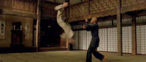

|
The Matrix is a stunning visual achievement. The
Wachowski Brothers deliver the goods in bringing their vision to the
screen. The Science Fiction Action film is exciting, thought
provoking, and thoroughly mesmerizing. No, The Matrix is not
a perfectly executed series of kicks and jumps. There are plot
hiccups, it’s not always easy to follow, but overall the world of The
Matrix is true to itself. Seeing it a second time makes it
easier to accept the internal logic. There were moments when I did
not want to think about the logic of what was going on but I wanted
to enjoy the visceral trip. Damned if I can figure out the telephone
business. Hey, but that’s the Wachowski’s The Matrix.
Cell phones and computers rule the world after all. Or is it that
love conquers all in any world. Ask the Wachowski Brothers. They
will probably have all the answers if the realization of The
Matrix is any indication.
 |
|
Testing Neo.©Warner |
Action sequences aside, there are some interesting philosophical
questions explored in The Matrix. What is reality? Does
slavery require knowledge of enslavement? There are plenty of
druggies who have faced down the question of what world they want to
spend their time in. Are the computers just giving humanity what it
wants by building a computer-realized world? What’s the
significance of Morpheus leading the fight against the machines? And
where the hell is that remaining colony of humans located anyway and
what are they doing to fight against the world ruled by computers?
Let’s take The Matrix as pure action movie and boy,
does it move at a pace. The chases are terrific. Those rooftop
sequences positively glisten. The fights are beautifully
choreographed and the intensive training the actors went through
shows up on the screen. Yes, and that wirework is a gas. The actors
are leaping all over the screen, climbing walls like flies and the
tech folks have made it look better than any Hong Kong wire movie
I’ve ever seen.
Keanu Reeves is solid as Neo in The
Matrix. He flies
through the air with the greatest of ease and executes all those
kick to perfection. He always looks quizzical and this works well
with the character. Laurence Fishburne gives a controlled, elegant
performance as Morpheus. Carrie-Ann Moss is cat sleek, wearing tight
fitted black outfits and throwing her body up for grabs as an all
out action dish. And Joe Pantoliano gives Cypher a touch of needed
sleaze. The Wachowski’s knew they were on to something with
Pantoliano in their first outstanding film Bound.
The Matrix is an eye-popping DVD, brilliant in explosive
conceptions. I remember The
Matrix as all too grainy in the movie theater. On DVD, The Matrix has almost no grain. It’s smooth and detailed with
magnificent lighting. Dig all those fluorescent hues. The Wachowskis
must have grown up under the fluorescents; they seem to know them so
well. And isn't fluorescent the perfect lighting for Keanu. The
transfer is blessedly unenhanced; no pumping of the sharpness, no
edge artifacts. This could have resulted in a softer picture but no
way here. Sonically, The Matrix was a trip too. Man, my home
theater is riddled with bullets.
Well, if the visual and sonic virtues of
The
Matrix aren’t enough for you, this is a Warner special
edition. There’s audio commentary with visual effects supervisor
John Gaeta, editor Zack Staenberg and actress Carrie-Ann Moss. The
HBO twenty-five minute special First Look: Making the Matrix is
also included and is very enjoyable. Additional
segments dissect the special effects further and compare the story
boards to the realized film.
|